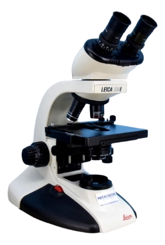

Purpose
This site is intended to showcase multiple images of a variety of cytological samples of gynecological diseases taken through microscopes in the University of Carabobo Venezuela, the images will include samples of low-grade squamous intraepithelial lessions (LSIL) associated to HPV infections, Trichomonas, Bacterial Vaginosis, etc.
Scenarios for my page
What is the specific stain technique used in these samples?
What brand and model of microscope was used for the photos?
Will there be any other sample photos uploaded later about non-gynecological diseases like apocrine metaplasia, fibroadenoma, etc?
Color schema
1: 457B9D (Cerulean) used for headings and footer as a background color
2: F1FAEE (Honeydew) used for the text of each heading and the footer for better contrast
3: 000814 (Rich black) used for the paragraph text of each figcaption
4: E0E1DD (Platinum) used for the background of each figure element
.webp)
Typography
Font 1: Roboto, used for the body paragraphs
Font 2: Montserrat, used for all the headings and titles/subtitles
.webp)
Webpage Wireframe
 10.21.45 p. m..webp)